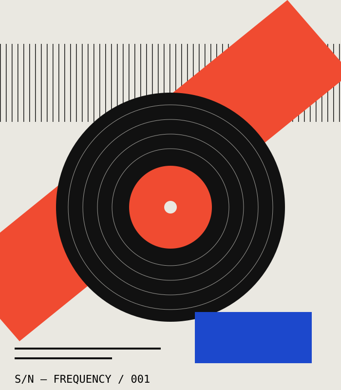

图像未能加载 · 打开原始来源 ↗
图像未能加载 · 打开原始来源 ↗Correct the Optics
audiodefectwave · Ambient / IDM / Glitch
作者介绍包含噪声纹理、合成器、钢琴和 Glitch 处理。可留意节奏由稀疏段落向 Broken Beat 过渡的方式。

S/N — 001 · 2026.11.17电子音乐、芯片逆向、开源硬件与数字艺术。第 001 期以软件 USB、CH32V003 和微型 MIDI 合成器为线索，串联源码与制作记录。
模拟第 001 期。按一天的阅读时段组织：上午专辑与技术文章，中午源码和制作日志，傍晚视频与电子艺术。包含近期发行与历史项目；历史项目不作为当日新闻。图片使用网络原始地址，点击可访问出处。本站尚未接入每日 AI 自动写稿；本期为示例内容。
专辑发现 / 芯片显微 / 作者网站 / 技术文章
图像未能加载 · 打开原始来源 ↗作者介绍包含噪声纹理、合成器、钢琴和 Glitch 处理。可留意节奏由稀疏段落向 Broken Beat 过渡的方式。
 图像未能加载 · 打开原始来源 ↗
图像未能加载 · 打开原始来源 ↗一张偏向即兴、纹理与低密度节奏的合集。可以从空间混响、延迟反馈与重复结构入手试听。
以上为用户提供的试刊选题与发行描述，未在本版重新核实 RYM 收录、评分及发行日期。网页不显示未经核实的评分。
 图像未能加载 · 打开原始来源 ↗
图像未能加载 · 打开原始来源 ↗Ken Shirriff 使用芯片显微照片分析 CMOS 555 的内部电路，包括比较器、电流镜和输出级。可对照功能框图观察器件布局。
三个原始资料入口：微型硬件制作、MCU 软件外设实验，以及芯片逆向。优先阅读作者的原理图、代码和测试记录。
Hackaday 2026 年 2 月的观点文章讨论 AI 生成代码对开源项目维护的影响。阅读时可结合嵌入式驱动中的时序与测试成本。
一项源码深读 + 一份相关制作日志
cnlohr 的 rv003usb 为 CH32V003 提供软件实现的 USB Low-Speed 设备功能。芯片没有专用 USB 控制器，项目通过中断、GPIO 与汇编控制收发时序。
USB Low-Speed 每位约 667 ns；48 MHz 时钟下约 32 个周期。中断响应、采样、位填充与同步处理需要在有限周期内完成。
 图像未能加载 · 打开原始来源 ↗
图像未能加载 · 打开原始来源 ↗ILLUSTRATION / 软件 USB 相关项目图像；技术细节以仓库源码为准。
mitxela 使用 CH32V003、USB-C 插头和小型 PCB 制作 MIDI 合成器。制作记录包含布线、器件装配、软件 USB 和枚举问题。
这份记录与 rv003usb 形成直接关联：前者说明软件 USB 的实现，后者展示它如何用于一个极小尺寸的声音设备。
作者实物照片 / PCB 布线图。远程图片可能因原站策略无法显示；点击图片区域可进入制作日志。
制作视频 / 声音实验 / 独立互联网
视频对应的制作记录展示了连接器封装、PCB 布线和器件装配过程。视频之外可对照作者的图片与文字记录。
作者记录了通过 Hub 与直接连接电脑时行为不同的情况。适合结合 USB-C CC 引脚和软件 USB 的时序要求阅读。